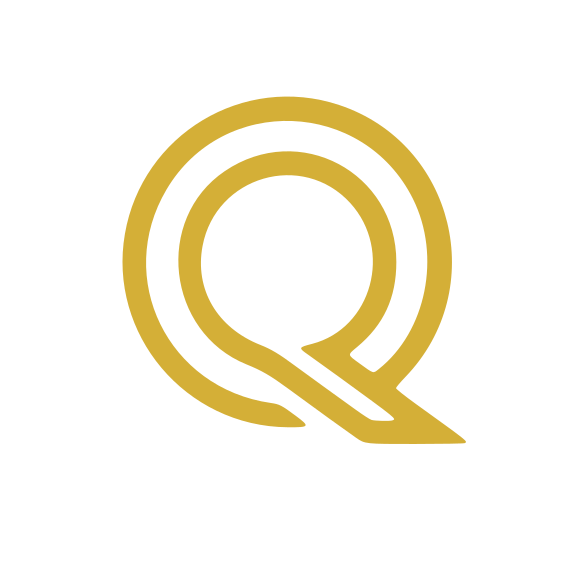

Prima lettura
Le Mie Sfide come Anima e le Mie Sfide in questa Vita
Una mappa del tuo punto di partenza, scritta in linguaggio diretto, pensata per chi non ha alcuna competenza di astrologia. Si legge come una lettera, non come un referto tecnico.

Un percorso esplorativo sulla tua mappa natale, in tappe progressive
Ho sviluppato Il Disegno Originario® come un percorso esplorativo sulla propria mappa natale, strutturato in letture progressive che chiamo Camere. È un ambito distinto dal lavoro clinico: non sostituisce percorsi medici o psicologici, ma offre uno spazio per conoscere meglio la propria mappa personale e i propri schemi ricorrenti.
Prima lettura
Una mappa del tuo punto di partenza, scritta in linguaggio diretto, pensata per chi non ha alcuna competenza di astrologia. Si legge come una lettera, non come un referto tecnico.
Se vuoi proseguire
Una lettura relazionale sulle dinamiche che si ripetono tra due persone, in una famiglia o in un gruppo. Stesso registro della prima lettura: niente gergo, si legge da soli.
Esistono altri livelli, più tecnici, pensati per chi lavora nella relazione d'aiuto (psicologi, counsellor, terapeuti). Se sei un professionista e vuoi saperne di più, scrivimi.
Nome, data, ora e luogo di nascita. Se l'ora non è nota o è solo approssimativa, si procede comunque: non è un ostacolo.